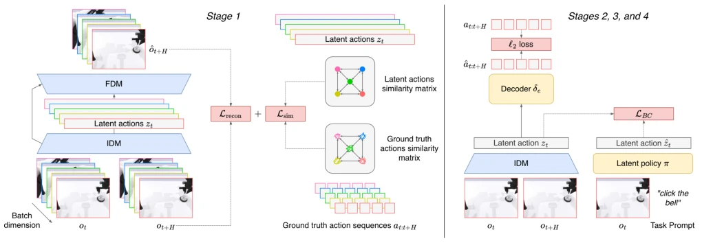
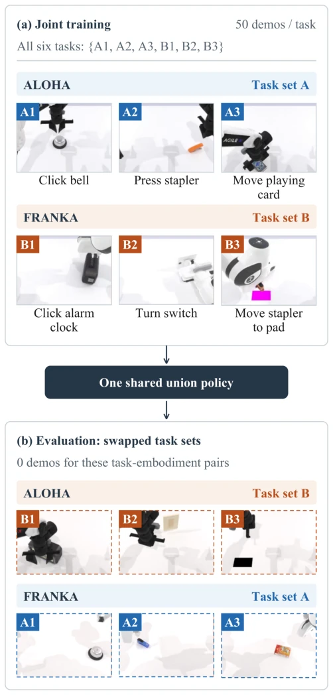
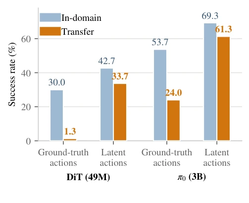
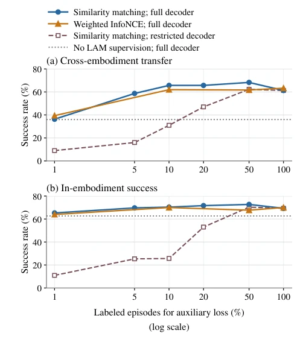

This paper administers a strong shot of adrenaline to the "cross-embodiment" transfer capability of Latent Action Models (LAMs), but the approach is quite "violent aesthetics". The authors found that instead of letting the model rote memorize specific actions of different robots (prone to overfitting to specific hardware), it is better to teach it to understand the "relative relationships" between actions. This "action similarity supervision" strategy is simple and rough yet extremely effective, directly doubling the cross-embodiment success rate, and even allowing a small model with only 49M parameters to achieve the performance of a large model. However, the authors did not shy away from the "black box" problem: although the model can transfer, embodiment identity features are still hidden in the latent space, indicating it may have only learned a variant of "tailoring treatment to the person", rather than true embodiment invariance. Furthermore, all experiments were conducted in the simulation environment RoboTwin 2.0; regarding noise and uncertainty in the real world, whether this "similarity magic" remains effective can only be marked with a question mark. Overall, this is a highly practical "hyperparameter tuning" guide in low-data scenarios; although it does not completely solve the generalization problem, it indeed points out the direction.
The field of embodied intelligence is facing an awkward "data famine": although Vision-Language-Action (VLA) models such as π0 [1] utilize internet data to achieve powerful visual and language understanding, the collection of high-quality robot action trajectory data is extremely costly and limited to specific hardware embodiments. Latent Action Models (LAMs) attempt to learn latent actions from videos without action labels, thereby getting rid of dependence on expensive action data, but existing methods have two fatal weaknesses: first, they are easily interfered by background visual noise; second, when different embodiments execute the same motion, the encoded latent actions are often inconsistent, leading to cross-embodiment transfer failure. Although existing work such as LAOM [13] attempts to constrain the latent space by directly predicting real actions through auxiliary loss, this instead strongly binds latent actions to the action space of specific embodiments, hindering generalization ability. Although VILA [15] and others introduce structural alignment, it mainly targets view robustness rather than cross-embodiment transfer. Therefore, how to utilize a small amount of real action labels to guide the learning of the latent action space without leaking specific embodiment action details, achieving true cross-embodiment transfer, is a key problem that needs to be solved urgently.
The paper proposes a multi-stage training pipeline, with the core innovation lying in "Action-Similarity Supervision". The overall Pipeline is divided into four stages: first, utilize Inverse Dynamics Model (IDM) and Forward Dynamics Model (FDM) for joint pre-training on unlabeled videos; second, use the trained IDM to label latent actions for the full dataset; third, train the latent behavior cloning policy (π); fourth, train independent decoders (δ) for each embodiment. The key innovation lies in the first stage: the authors abandoned the auxiliary loss of directly predicting real actions, and instead adopted the idea of relational knowledge distillation. Specifically, calculate the cosine similarity matrix between all latent action pairs within the batch, and align it with the similarity matrix of the corresponding real action sequences (converted to end-effector velocity increments). To eliminate embodiment differences, real actions are standardized to per-step deltas, and small time sliding alignment is allowed. The loss function Lsim only penalizes the difference in similarity matrices, without requiring latent actions to directly equal real actions. This design forces the latent space to learn "relative relationships between actions" rather than "absolute coordinates", thereby naturally possessing cross-embodiment generalization ability. Furthermore, experiments show that using End-effector space rather than joint space to calculate similarity, and allowing cross-embodiment pairs to participate in similarity calculation, yields the best results.

Fig. 1. Illustration of our proposed method. During the first stage, we sample a batch of observations ot and future observations ot+H. The inverse dynamics model (IDM) encodes each pair into a single low-dimensional latent action zt. Within a batch, we compute the pairwise similarities of the latent actions and align them with the pairwise similarities of the corresponding ground-truth action sequences (Lsim). The forward dynamics model (FDM) reconstructs the future observation from the current observation ot and the latent action (Lrecon). The IDM and FDM training is done jointly by optimizing the combined loss L = Lrecon + λLsim. In the second stage we annotate the dataset using the trained IDM, then in the third stage we train the latent behavior cloning policy (π optimizing λLBC), fin
Experiments are based on the RoboTwin 2.0 simulation environment, constructing a strict cross-embodiment task transfer setup: Aloha and Franka two robots respectively demonstrate mutually exclusive task sets, all data is mixed during training, and "cross" tasks are tested during evaluation (i.e., robots execute tasks never demonstrated by them). Baselines include π0 [1] directly predicting joint actions and various LAM variants. Results show that under a fixed policy architecture, the LAM using action similarity supervision increased the cross-embodiment success rate from the baseline of 24.0% to 61.3%, nearly doubling, and retained 88.5% of in-embodiment performance. Ablation experiments further found that using end-effector increments to calculate similarity and including cross-embodiment pairs yielded the best results; while introducing wrist camera views instead reduced transfer ability. In terms of data efficiency, only 10% of action labels are needed to maintain most performance gains. Furthermore, even if the policy model is shrunk 60 times (from 3B down to 49M), this method can still bring a 25-fold transfer improvement, proving its robustness.

Fig. 2. The cross-embodiment task-transfer setting. Each embodiment demonstrates three tasks (top); at evaluation the task sets swap embodiments (bottom): every evaluated embodiment-task pair has zero demonstrations anywhere during training. Bottom thumbnails are frames from actual closed- loop transfer rollouts of our best system.

Fig. 4. Policy comparison with direct joint-action targets and the selected latent representation. Transfer improves by 37.3 percentage points for π0 and 32.4 points for the ∼60× smaller Multi-Task DiT [31]. The DiT gains over 25× in transfer success and retains 78.9% of its in-embodiment SR. LAM pretraining, annotation, and decoder training are fixed when changing the latent policy.

Fig. 3. Label efficiency of similarity matching and weighted InfoNCE. A full decoder uses all 150 labeled episodes per embodiment; a restricted decoder uses the same subset as the auxiliary loss. With full decoders, both objectives retain most of their full-label transfer at 10% labels. The no- LAM-supervision baseline uses a full decoder; the similarity curves share one 100% endpoint. Lines connect evaluated fractions; no intermediate InfoNCE runs are implied.